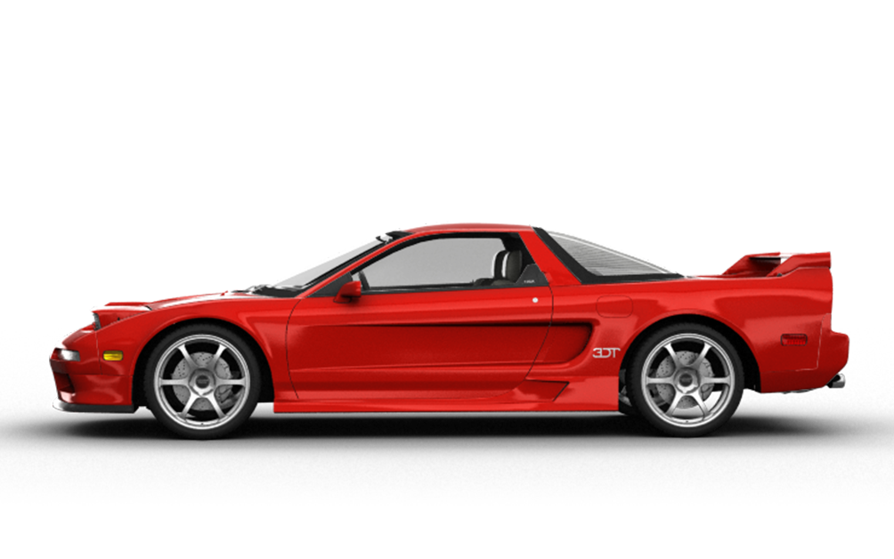
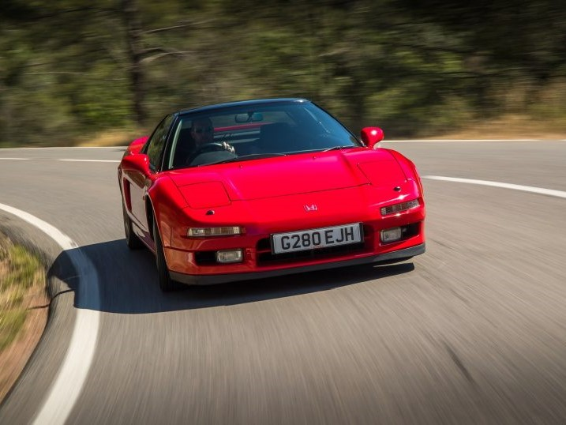
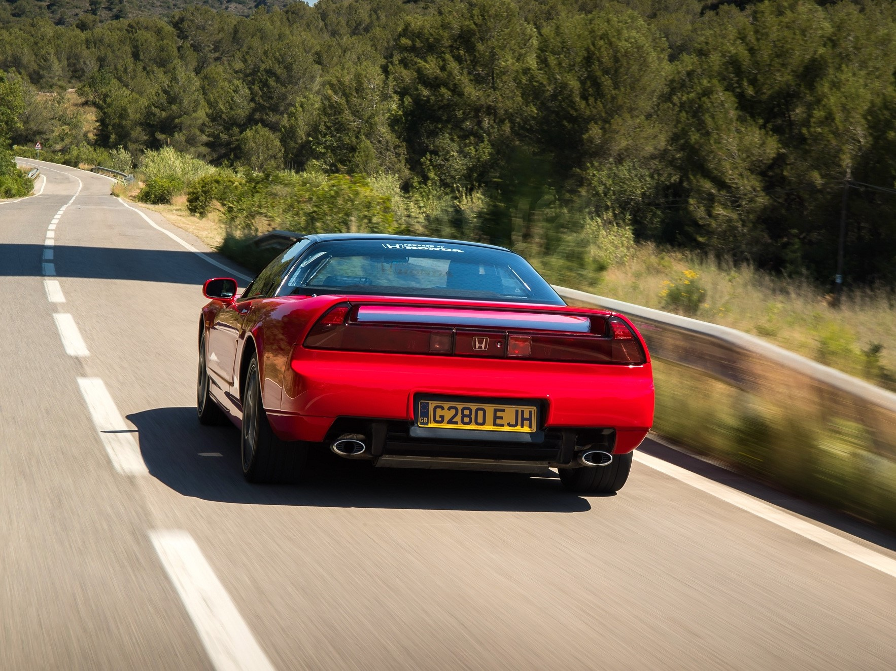

На рубеже 80-90-х годов – период подъема в автомобильной промышленности. Сопровождался он настоящим всплеском новинок в сегменте спортивных автомобилей. Причем, представляли такие модели не только компании с богатым опытом их создания вроде Porsche, Ferrari или Lamborghini. В элиту поднялись и новички в этом сегменте. Так, Honda, шокировала публику среднемоторным купе NSX.
Автомобиль, известный на весь мир

В конце 80-х в Формуле-1 не было равных болидам McLaren с двигателями Honda.
Поэтому не удивительно, что доводку купе поручили легендарному пилоту McLaren Айртону Сенне.
За рулем автомобиля он провел не один час тестов на автодроме Сузука.
В результате его работы удалось добиться отточенной управляемости на уровне Ferrari и Porsche.
Как из салона

После 30 лет на автомобиле невозможно найти ни единого следа эксплуатации

Все элементы и запчасти – заводские. Автомобиль в таком же состоянии, в каком он был в салоне
Технические характеристики
Мощность
Разгон до 100 км/ч
Крутящий момент
Тип КПП
Объем двигателя
Расход топлива
Покрышки и диски
280 л. с.
5.4 сек
304 Нм
Механическая
3.2 л
16.8 л/100 км
R17/R17